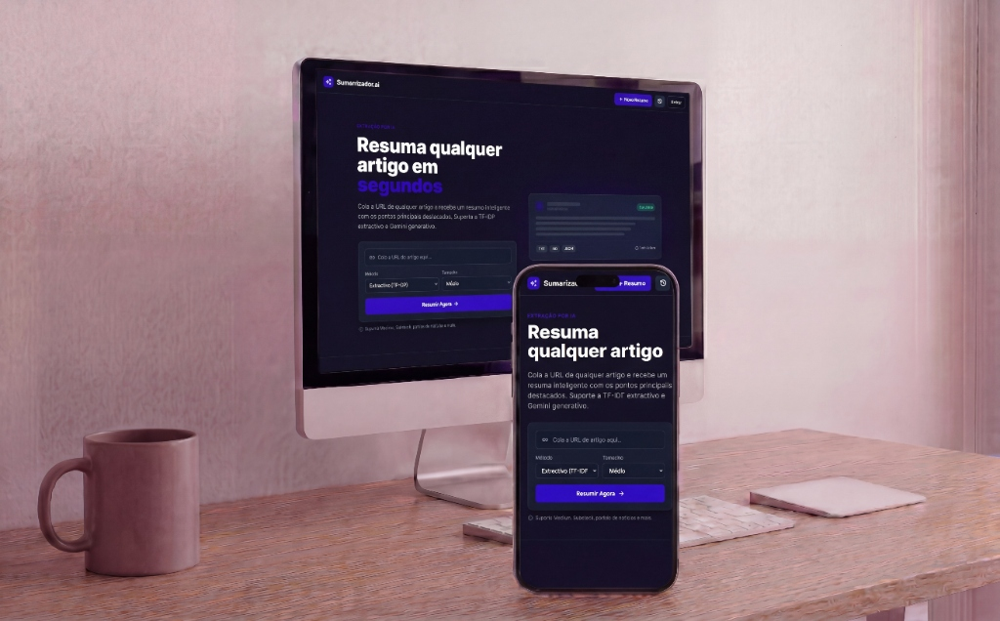

- Arquitetura
- Monólito modular em camadas
- Assíncrono
- Celery + outbox relay para RabbitMQ
- Testes
- 75,78% de cobertura
- Observabilidade
- Prometheus · Grafana · OpenTelemetry
Visão geral
Plataforma fullstack para extração, processamento e sumarização assíncrona de artigos públicos na web. O sistema recebe uma URL, executa o scraping com proteções de segurança, processa o texto e gera um resumo — por método extrativo baseado em TF-IDF ou por integração com o Google Gemini.
Oferece histórico, download dos artefatos em txt, md ou json e painel administrativo com estatísticas, limpeza de cache e rotação de segredo JWT.
Arquitetura
Monólito modular com separação explícita de camadas, adequado para demonstrar organização de código sem assumir a complexidade operacional de microservices reais.
-
presentation/Borda HTTP com Flask Blueprints para API, autenticação e entrega da SPA React. -
application/Comandos, queries, handlers e um event bus de aplicação. -
domain/Entidades (SummarizationTask, User, AuditLogEntry), eventos e contratos de repositório. -
infrastructure/Repositórios SQLAlchemy, wiring de dependências, auth e pipeline runner. -
modules/ e tasks/Scraper, sumarizador, cache, rate limiting, tracing — e execução assíncrona com Celery.
Fluxo de sumarização
- O usuário envia
POST /api/sumarizarcom a URL e os parâmetros de resumo. - A API normaliza a URL, valida o formato, aplica rate limit e aceita um
X-Idempotency-Keyopcional. - O handler cria a
SummarizationTask, persiste e registra o eventoTaskSubmitted. - O
AsyncTaskDispatcherdespacha o processamento para o Celery; se o Celery estiver indisponível, cai para uma thread local. - O pipeline executa scraping, proteção contra SSRF, limpeza de texto, detecção de idioma, sumarização e geração dos arquivos de saída.
- A tarefa é atualizada para
doneoufailed, métricas são publicadas e os eventos vão para a auditoria. - O frontend faz polling em
GET /api/tarefa/<task_id>até a conclusão. - Em paralelo, um job periódico lê a tabela de outbox e publica os eventos pendentes no RabbitMQ.
Pontos fortes
- Mensageria real com RabbitMQ e Celery, com fallback para thread local quando o broker está fora.
- Outbox, idempotência e audit log — combinação rara em projetos pessoais.
- Segurança acima da média: proteção SSRF, JWT, CSRF, RBAC, rate limiting, security headers e rotação de segredo.
- Observabilidade completa: Prometheus, Grafana, OpenTelemetry, Jaeger e logs estruturados.
- Persistência versionada com SQLAlchemy e Alembic.
- Cobertura de testes de 75,78% na validação executada.
Limites e decisões conscientes
O que este projeto não faz, e por quê. Descrever isso com precisão vale mais do que exagerar o escopo.
- O domínio é relativamente simples e anêmico — a maior regra de negócio explícita é a máquina de estados da tarefa.
- Não há bounded contexts claros, aggregates complexos ou linguagem ubíqua forte.
- O CQRS é organizacional: não existe segregação física de banco, read models especializados ou event sourcing.
- O event bus é interno e em memória — não é uma plataforma distribuída orientada a eventos de ponta a ponta.
- A demo está hospedada no plano gratuito do Render, então a primeira requisição pode levar cerca de 30 segundos (cold start).